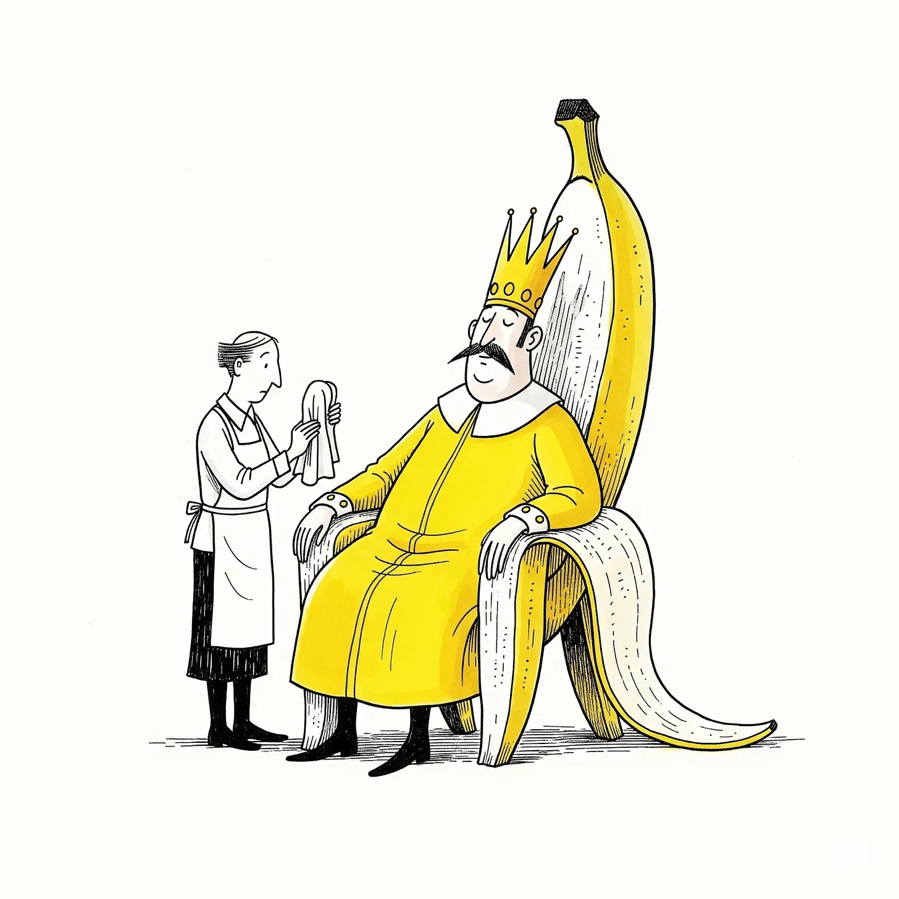

황제는 매일 아침 신선한 바나나 껍질을 요구했다. 황금빛이어야만 했다. 점박이 껍질은 반역죄였다.
[The Emperor demanded fresh peels every morning. Golden ones. Spotted ones were treason.]
나는 황제가 조회를 여는 동안 압축된 바나나 껍질로 만든 그의 왕좌를 닦았다. 칼륨 궁전을 섬긴 지 어언 20년. 다 큰 사내들이 과일 쓰레기에 머리를 조아리는 꼴을 20년간 지켜봐 왔다.
[I polished his throne of compressed banana skins while he held court. Twenty years I’d served the Potassium Palace. Twenty years of watching grown men bow to fruit waste.]
“주간 통계를 보고하라.” 황색 폐하께서 명하셨다.
[“Bring forth the weekly statistics,” His Yellowness commanded.]
물컹 대신이 비척거리며 앞으로 나섰다. 종이는 마른 껍질처럼 바스락거렸다. “폐하, 미끄러짐 사고가 삼십 퍼센트 증가하였나이다.”
[Minister Mushy shuffled forward. Papers rustled like dried peels. “Sire, our slip-and-fall incidents have increased by thirty percent.”]
황제의 눈이 번뜩였다. “아주 좋아. 혼돈이 클수록 통제도 쉬워지는 법이지.”
[The Emperor’s eyes gleamed. “Excellent. More chaos means more control.”]
나는 더 힘껏 문질렀다. 황제의 무게에 왕좌가 삐걱거렸다. 바나나 껍질 제국에서는 모든 것이 삐걱거렸다. 바닥도, 의자도, 민주주의 그 자체마저도.
[I scrubbed harder. The throne squeaked under his weight. Everything squeaked in the Banana Peel Empire. Floors. Chairs. Democracy itself.]
“반대파는 어찌 되었는가?” 황제는 바나나 나무껍질로 깎은 이쑤시개로 이를 쑤셨다.
[“What of the Opposition?” The Emperor picked his teeth with a toothpick carved from banana tree bark.]
“궤멸되었사옵니다, 잘 익으신 폐하. 그들은 발판을 마련하지 못했나이다.” 물컹 대신은 그 자신의 농담에 히죽 웃었다.
[“Crushed, Your Ripeness. They couldn’t gain traction.” Minister Mushy smirked at his own joke.]
이 모든 일의 시작을 나는 기억한다. 사소한 사고였다. 황제는 동네 식료품점 앞에서 바나나 껍질을 밟고 미끄러졌다. 그는 욕설 대신 신의 계시를 받았다고 주장했고, 미끄러움을 토대로 제국을 세웠으며, 넘어지는 것을 유행으로 만들었다.
[I remembered when this started. A simple accident. The Emperor slipped on a peel outside his grocery store. Instead of cursing, he claimed divine inspiration. Built an empire on slipperiness. Made falling fashionable.]
“대중들은 아직도 믿는가?” 그의 목소리에는 그 익숙한 허기가 묻어 있었다.
[“The masses still believe?” His voice carried that familiar hunger.]
“백성들은 ‘위대한 미끄러짐'을 숭배하나이다, 폐하. 저희의 선전 활동 덕분에, 백성들은 넘어지는 것이 인격을 수양하는 길이라 굳게 믿고 있사옵니다.”
[“They worship the Great Slip, sire. Our propaganda keeps them convinced that falling builds character.”]
실소가 터져 나올 뻔했다. 시민들은 넘어지기를 연습했고, 멍으로 세금을 냈으며, 얼마나 우아하게 구르는지에 따라 관리를 선출했다. 이 모든 게 터무니없어질수록 사람들은 더더욱 굳게 믿었다.
[I wanted to laugh. Citizens practiced falling. Paid taxes in bruises. Elected officials based on their ability to tumble gracefully. The more ridiculous it became, the more they believed.]
전령 하나가 헐레벌떡 뛰어 들어왔다. 젊고, 의욕에 차 있었다. 아마 첫 임무일 테지.
[A messenger burst in. Young. Eager. Probably his first day.]
“폐하, 지방에서 온 긴급 전갈이옵니다!”
[“Your Majesty, urgent news from the provinces!”]
황제가 몸을 앞으로 기울였다. “말하라.”
[The Emperor leaned forward. “Speak.”]
“사과 연합이 오렌지 공화국과 동맹을 맺었습니다. 그들이… '접지력 기술'로 동쪽 국경을 위협하고 있사옵니다.”
[“The Apple Coalition has formed an alliance with the Orange Republic. They’re threatening our eastern borders with… grip technology.”]
정적이 흘렀다. 이내 황제의 웃음소리가 궁전 안에 울려 퍼졌다. 역사적인 순간에 누군가 밟고 미끄러졌다는 바나나 껍질 액자들이 걸린 벽에 부딪혀 메아리쳤다.
[Silence. Then the Emperor’s laughter echoed through the palace. It bounced off walls lined with framed banana peels. Each one supposedly from a historic slip.]
“접지력 기술이라고?” 그는 눈가의 눈물을 닦아냈다. “어리석은 놈들. 저들은 아무것도 몰라. 사람들은 안정을 원치 않아. 그저 자신이 넘어지는 걸 탓할 대상이 필요할 뿐이지.”
[“Grip technology?” He wiped tears from his eyes. “Fools. They don’t understand. People don’t want stability. They want to blame something else for their falls.”]
나는 속으로 고개를 끄덕였다. 황제의 말이 맞았다. 백성들은 실패에 대한 변명거리를 사랑했다. 제국이 바로 그것을 제공했다. 껍질에 미끄러지면 제도를 탓하고, 제 발에 걸려 넘어지면 껍질 분배가 부적절했다고 불평했다.
[I nodded to myself. He wasn’t wrong. Citizens loved having an excuse for failure. The Empire gave them that. Slip on a peel, blame the system. Trip over your own feet, blame inadequate peel distribution.]
“껍질 생산량을 두 배로 늘려라.” 황제가 선언했다. “사과 연합 영토에 흩뿌려라. 놈들의 접지력 기술을 무용지물로 만들어 버려.”
[“Double the peel production,” the Emperor declared. “Scatter them in the Apple territories. Make their grip technology worthless.”]
물컹 대신이 서둘러 받아 적었다. “현명하십니다, 미끄러우신 폐하.”
[Minister Mushy scribbled notes. “Brilliant, Your Slipperiness.”]
나는 광을 내는 일을 마쳤다. 왕좌는 황금 바나나처럼 번쩍였다. 이곳의 모든 것은 번쩍였다. 표면은 언제나 매끄러웠고, 사람들의 마음 역시 교활하게 미끄러웠다.
[I finished polishing. The throne gleamed like a golden banana. Everything here gleamed. Surfaces stayed slick. Minds stayed slippery too.]
조회는 해산되었다. 나는 청소 도구를 챙겼다. 낙원에서 보낸 또 하루. 내일은 또 새로운 요구가 있을 것이다. 새로운 껍질. 모두를 계속해서 미끄러지게 할 새로운 방법들.
[The court dispersed. I gathered my cleaning supplies. Another day in paradise. Tomorrow would bring fresh demands. Fresh peels. Fresh ways to keep everyone sliding.]
황제는 자리에 그대로 앉아 있었다. 이제 홀로였다. 그는 잘 닦인 바닥에 비친 자신의 모습을 응시했다.
[The Emperor remained seated. Alone now. He stared at his reflection in the polished floor.]
“아직도 보고 있느냐, 하인아?”
[“Still watching, servant?”]
나는 멈칫했다. 20년 만이었다. 그가 내게 직접 말을 건 것은.
[I paused. Twenty years. He’d never acknowledged me directly.]
“언제나 지켜보고 있사옵니다, 폐하.”
[“Always, Your Majesty.”]
“좋다. 누군가는 이 위대함을 목도해야지.” 그는 조심스럽게 일어섰다. 황제라 해도 자신의 껍질 앞에서는 속수무책이었으니까. “내일, 우리는 동쪽으로 확장한다. 더 넓은 영토. 더 많은 미끄러짐. 더 강한 권력을.”
[“Good. Someone should witness greatness.” He stood carefully. Even emperors weren’t immune to their own peels. “Tomorrow we expand eastward. More territory. More slips. More power.”]
나는 고개를 끄덕였다. 그가 발을 끌며 사라지는 모습을 지켜봤다. 그의 예복이 바닥을 스치며 속삭이는 듯한 소리를 냈다. 넘어지지 않으려 애쓰는 권위의 발버둥 소리였다.
[I nodded. Watched him shuffle away. His robes whispered against the floor. The sound of authority trying not to fall.]
나는 텅 빈 알현실을 둘러보았다. 바나나 껍질 태피스트리가 황금 깃발처럼 걸려 있었다. 과하게 익어버린 야망의 냄새가 공기를 채웠다. 내일은 또 다른 부조리가 찾아오겠지. 넘어지는 것이 곧 자유라고 사람들을 설득할 새로운 방법들과 함께.
[I looked around the empty throne room. Banana peel tapestries hung like golden flags. The smell of overripe ambition filled the air. Tomorrow would bring new absurdities. New ways to convince people that falling was freedom.]
제국은 확장할 것이다. 백성들은 미끄러질 것이다. 대신들은 환호할 것이다.
[The Empire would expand. Citizens would slip. Ministers would applaud.]
그리고 나는 과일 쓰레기와 어리석음으로 지어진 이 옥좌를 계속해서 닦을 것이다.
[And I would keep polishing thrones built on fruit waste and folly.]
어떤 제국은 몰락한다.
[Some empires fall.]
이 제국은 그저 계속해서 미끄러질 뿐이었다.
[This one just kept slipping.]